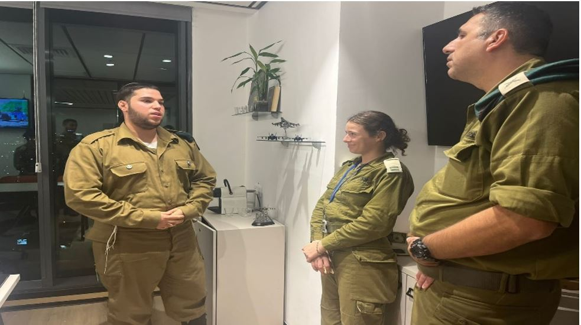

Network administrator in the IDF with hands-on experience in managing and operating computing infrastructure, information security, and complex troubleshooting. מנהל רשת בצה״ל בעל ניסיון מעשי בניהול ותפעול תשתיות מחשוב, אבטחת מידע ופתרון תקלות מורכבות.
📞 055-6612722
📧 eliya.malik.2004@gmail.com
📍 Tel Aviv, Israelתל אביב, ישראל

IDF | 2022–2024 צה"ל | 2022–2024
IP Camera installation, VLAN management, Basic Firewall
התקנת מצלמות IP, ניהול VLAN, חומת אש בסיסית
Linux (Ubuntu/CentOS) – CLI commands
Linux (Ubuntu/CentOS) – פקודות שורש
Diagnosis and repair of computers, servers, and peripheral equipment
אבחון ותיקון מחשבים, שרתים, ציוד קצה
CCNA Courses, Network Management, and Information Security (Security Clearance)
קורסי CCNA, ניהול רשתות ואבטחת מידע (סיווג בטחוני)
Full Matriculation Certificate
בגרות מלאה